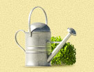

Ландшафтное проектирование Ландшафтное проектирование |
 Озеленение Озеленение |
 Водоемы Водоемы |
 Малые архитектурные формы Малые архитектурные формы |
 Стилевые сады Стилевые сады |
 Посадка крупномеров Посадка крупномеров |
 Зимние сады Зимние сады |
 Вертикальное озеленение Вертикальное озеленение |
 Инженерные системы Инженерные системы |
Обслуживание садов |
Услуги
Компания Oridis Design предоставляет наиболее полный комплекс ландшафтных услуг: от создания небольших водоемов и высадки кустарников до установки сложных фонтанных комплексов и посадки крупномерных деревьев. Нам важно, чтобы наши клиенты получили как можно большее удовлетворение от проделанной нами работы, именно поэтому сервис в нашей компании находится на самом высоком уровне. Oridis Design готова приложить все усилия для того, чтобы обратившийся в компанию человек мог наслаждаться не только результатами, но и самим процессом, в который он будет вовлечен. И мы уверены, что у нас получится создать сад Вашей мечты — именно таким, который подчеркнет индивидуальность его владельца и раскроет его характер.
Ландшафтный проект будет курировать один и тот же архитектор — от момента появления идеи до сдачи участка. Это позволяет достичь взаимопонимания и легкого разрешения разногласий.
Цены
| Проектирование | |||
| Выезд на участок ландшафтного дизайнера и инженера, консультации, фотосъемка | выезд | 3000  |
В случае удаленности более 100 км от МКАД стоимость увеличивается |
|---|---|---|---|
| Геодезическая съемка | 100 м.кв. | от 8000 |
|
Ландшафтный дизайн-проект:
|
100 м.кв. | 5000 |
Возможна скидка 20% при отказе Заказчика от 3D визуализации проекта |
| Реализация проекта | |||
| Подготовительные работы | |||
| Рубка деревьев | дерево | от 600 |
Стоимость зависит от размеров деревьев и сложности работ |
| Корчевка и удаление пней | ед. | от 500 |
|
| Кронирование деревьев | дерево | от 600 |
|
| Лечение больных деревьев | дерево | от 800 |
|
| Уборка и вывоз мусора | м.куб. | от 400 |
|
| Планировка рельефа | м.куб. | от 600 |
С учетом стоимости грунта |
| Устройство газонов | |||
| Рулонный газон | м.кв. | от 400 |
Рулонный газон, укладка газона, полив, один покос, гарантия 1 год |
| Рулонный газон на георешетке (для склонов) | м.кв. | от 500 |
Георешетка, укладка георешетки, рулонный газон, укладка газона, полив, один покос, гарантия 1 год |
| Мавританский газон | м.кв. | от 500 |
Семена, посев, полив, один покос, гарантия 1 год |
| Устройство цветников | |||
| Однолетники | м.кв. | от 500 |
Подготовка почвы с заправкой земляными смесями, посадка растений с учетом стоимости посадочного материала |
| Многолетники | м.кв. | от 700 |
|
| Розарии | м.кв. | от 900 |
|
| Вересковые композиции | м.кв. | от 800 |
|
| Теневые цветники | м.кв. | от 850 |
|
| Посадка деревьев и кустарников из питомников |
|||
| Хвойные деревья, 2-3 м | шт. | от 6 000 |
В стоимость включено: само растение, доставка, посадка, гарантия до 3-х лет, замена плодородного грунта, внесение удобрений, гарантийный уход |
| Хвойные деревья, 3-4 м | шт. | от 10 000 |
|
| Хвойные деревья, 4-5 м | шт. | от 15 400 |
|
| Хвойные деревья, 5-6 м | шт. | от 20 250 |
|
| Хвойные деревья, 6-7 м | шт. | от 30 500 |
|
| Хвойные деревья, > 7 м | шт. | от 45 000 |
|
| Хвойные кустарники | шт. | от 600 |
|
| Лиственные деревья, 2-3 м | шт. | от 7 290 |
|
| Лиственные деревья, 3-4 м | шт. | от 11 340 |
|
| Лиственные деревья, 4-5 м | шт. | от 18 900 |
|
| Лиственные деревья, 5-6 м | шт. | от 21 600 |
|
| Лиственные деревья, 6-7 м | шт. | от 32 400 |
|
| Лиственные деревья, > 7 м | шт. | от 48 600 |
|
| Лиственные кустарники | шт. | от 2 025 |
|
| Лианы | шт. | от 3 150 |
|
| Устройство дорожек и площадок | |||
| Из плитняка-песчаника на песчаном основании | м.кв. | от 510 |
Включая стоимость расходных материалов, без стоимости отделочного покрытия |
| Из плитняка-песчаника, декоративной плитки на бетонном основании | м.кв. | от 540 |
|
| Из гранитной брусчатки на бетонном основании | м.кв. | от 900 |
|
| Из клинкерного кирпича | м.кв. | от 840 |
|
| Установка бетонного садового бордюра | м.кв. | от 550 |
|
| Устройство пошаговой газонной дорожки из древесных спилов | м.кв. | от 350 |
|
| Устройство пошаговой газонной дорожки из натурального камня на песчаном основании | м.кв. | от 500 |
|
| Устройство системы дренажа | |||
| Устройство системы отвода ливневых, талых и избыточных вод |
система | от 35 000 |
С учетом всех материалов, выкопка траншей под трубы, установка колодцев, монтаж, установка элементов сливной системы: желоб, труба и т.п. |
| Система автоматического полива | |||
| Устройство системы автоматического полива |
система | от 25 000 |
С учетом всех материалов, прокладки, монтажа, запуска и гарантии |
| Система освещения | |||
| Монтаж системы освещения, закладка проводов, закладных под фонари |
система | от 15 000 |
С учетом всех материалов, прокладки, монтажа и гарантии |
| Устройство декоративного водоема | |||
| Устройство декоративного водоема «под ключ» (рассчитывается за м.кв. по дну) | м.кв. | 1500 |
С учетом всего оборудования, фильтров, материалов и т.п. |
Для того, чтобы клиентам было проще с нами работать, мы предлагаем ознакомиться с ценами на услуги нашей компании. В этом списке можно ознакомиться со стоимостью работ, получить их техническое описание и визуальное представление о них. Все это делается для того, чтобы у Вас не возникало вопросов о суммарной стоимости проекта, которая может включать в себя доставку и вывоз материалов, транспортировку растений и выезд специалистов на место проведения работ. Таким образом, наша компания старается сделать работу с садами простой и прозрачной.
Схема работы
Работа по преображению дачного участка требует времени и состоит из нескольких этапов.
Этап 1: Знакомство
Сначала на участке появляются ландшафтные инженеры и архитекторы, которые производят замеры. Затем с клиентом проводится консультация для того, чтобы уточнить какие-либо неясные моменты. Для демонстрации всевозможных вариантов оформления клиенту демонстрируется портфолио. Затем проводится фотосъемка участка.
Этап 2: Проектирование (требует наибольшего участия Клиента)
На этом этапе проводится геодезическая съемка участка, на базе которой и будет создаваться проект. Затем дизайнером разрабатывается три эскиза генерального плана с нанесением на каждый из них всех объектов: клумб, дорожек, насаждений, малых архитектурных форм. К каждому эскизу прилагаются пояснения. Клиент выбирает вариант, который понравился ему больше, и, в случае необходимости, корректирует его вместе с архитектором. На основании выбранного эскиза подбираются отделочные материалы, разрабатывается 3D-модель, на которой будет точно указано расположение клумб, их цветовое решение, а также расположение всех остальных объектов. После окончательного утверждения проекта и подтверждения всех его разделов будет составлена сметная стоимость.
Этап 3: Подготовка к производству
Этот момент играет немаловажную роль — здесь подготавливаются все материалы, с которыми в дальнейшем будет производиться работа. Из лучших питомников Европы отбираются и заказываются растения для Вашего будущего участка. Выбранные отделочные материалы также доставляются на участок вместе с малыми архитектурными формами. В это же время подготавливают и техническую документацию, а также и сам участок: вывозится старый грунт и мусор, доставляется инвентарь.
Этап 4: Производство работ на участке
Работы на участке обычно проводятся днем, в светлое время суток и без выходных. Но при особом пожелании клиента он могут вестись и круглосуточно, чтобы обеспечить быструю сдачу объекта. За правильным ходом работ постоянно следит ландшафтный архитектор, который курирует проект, и инженер.
Этап 5: Завершение работ
После завершения всех работ на участке необходимо проверить функционирование всех систем и качество работ. Этим занимается начальник производства. Он тестирует системы полива, освещения, дренажа, водопроводные системы. После проверки на функционирование и соответствие высокому качеству на участок приходит архитектор и еще раз лично все проверяет, чтобы удостовериться в том, что работы проведены качественно. И только затем Вам предлагается принять работу. Если Вас все устраивает, то стороны подписывают акт приемки-сдачи объекта, и все необходимые чертежи отдаются Вам. Вместе с ними также Вы получите рекомендации по уходу за растениями и консультацию по техническому обслуживанию инженерных сетей. После подписания акта приемки-сдачи сотрудники нашей фирмы из отдела по уходу будут следить за Вашим участком, ухаживать за ним и исправлять неполадки. При желании Вы можете продлить договор об уходе.